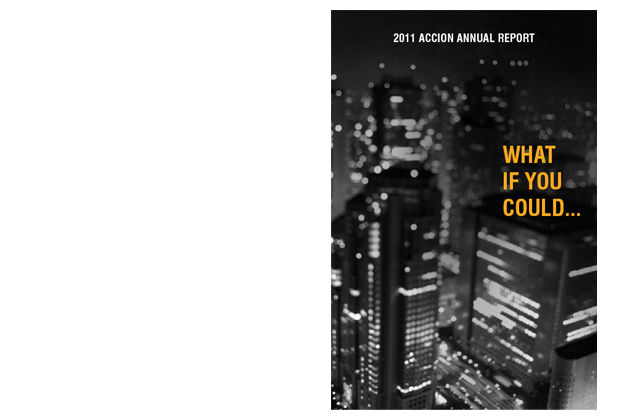

For this project we had to design an annual report for Accion USA which is a company that gives loans to small business owners and helps get businesses going and up on there feet. They also try and get micro-lenders who work with the people who need the loans. This project was very text heavy, my goal was to try and organize the information in a clean and simple way. I decided to break up the information into four sections through the question, What if you could empower other to help your community the economy and yourself?